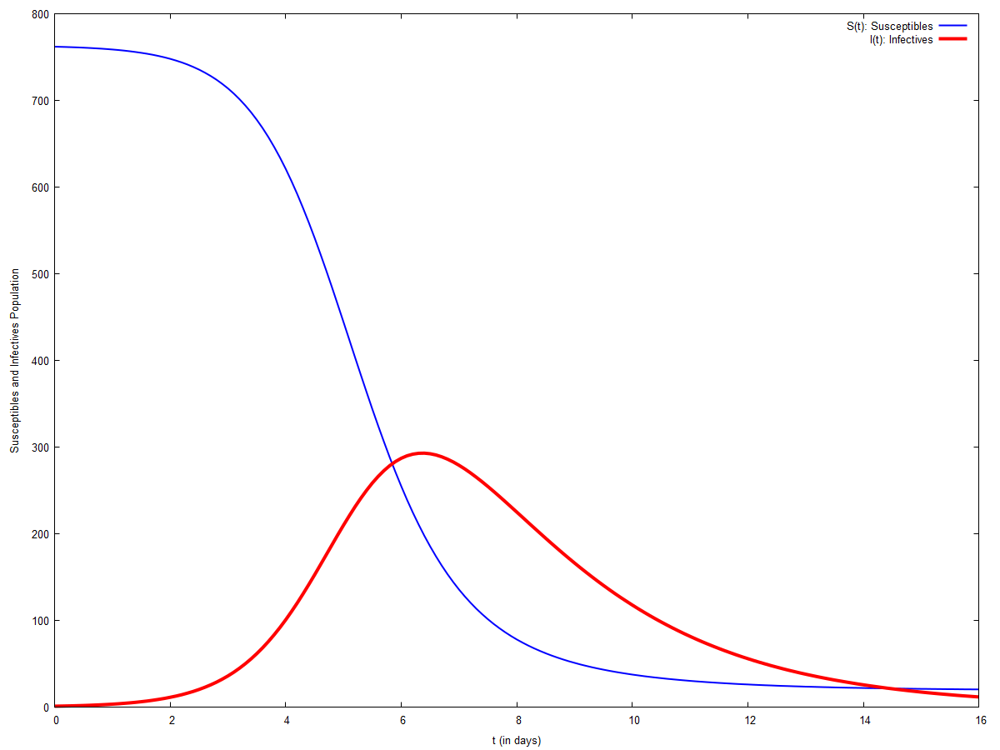
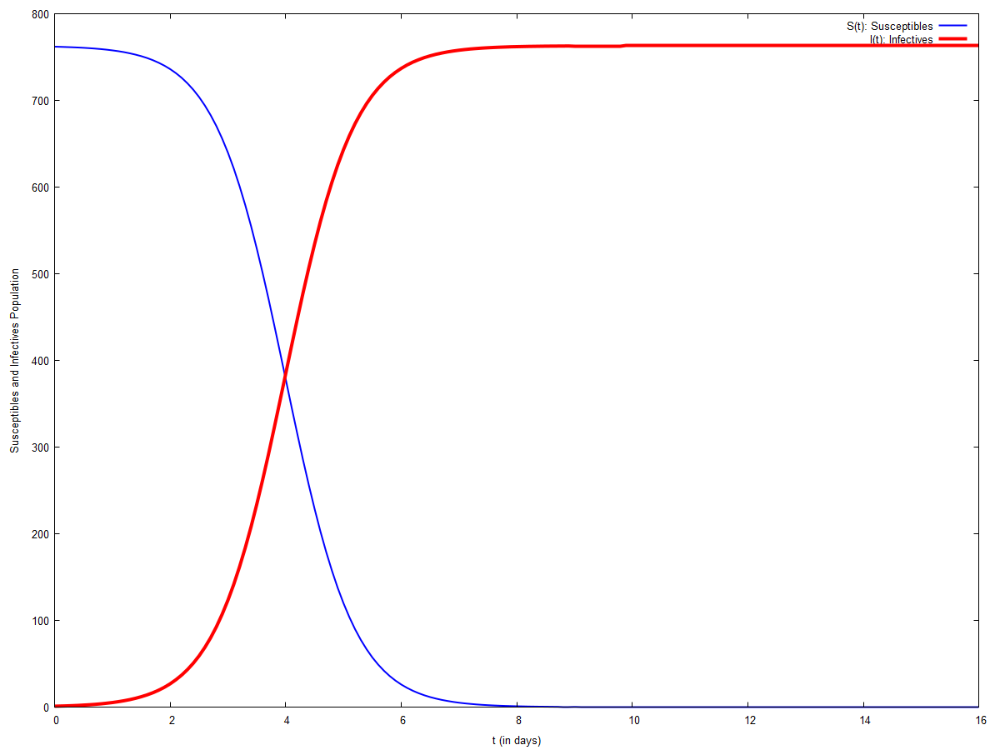

\( \DeclareMathOperator{\abs}{abs} \newcommand{\ensuremath}[1]{\mbox{$#1$}} \)
DSC-VI : Practical-10
Epidemic Model for Influenza
1 Basic Epidemic Model
| --> |
b
:
2
.
18
·
10
^
−
3
$
c
:
0
.
44
$
eqn1 : ' diff ( S , t ) = − b · S · I ; eqn2 : ' diff ( I , t ) = b · S · I − c · I ; pts : rk ( [ rhs ( eqn1 ) , rhs ( eqn2 ) ] , [ S , I ] , [ 762 , 1 ] , [ t , 0 , 16 , 0 . 1 ] ) $ [ % [ 1 ] , last ( % ) , length ( % ) ] ; susc : makelist ( [ pts [ i ] [ 1 ] , pts [ i ] [ 2 ] ] , i , 1 , length ( pts ) ) $ [ % [ 1 ] , last ( % ) , length ( % ) ] ; infec : makelist ( [ pts [ i ] [ 1 ] , pts [ i ] [ 3 ] ] , i , 1 , length ( pts ) ) $ [ % [ 1 ] , last ( % ) , length ( % ) ] ; wxplot2d ( [ [ discrete , susc ] , [ discrete , infec ] ] , [ t , 0 , 16 ] , [ y , 0 , 800 ] , [ style , [ lines , 2 ] , [ lines , 4 ] ] , [ xlabel , "t (in days)" ] , [ ylabel , "Susceptibles and Infectives Population" ] , [ legend , "S(t): Susceptibles" , "I(t): Infectives" ] ) $ |
\[\operatorname{ }\frac{d}{d t} S=-0.00218 I S\]
\[\operatorname{ }\frac{d}{d t} I=0.00218 I S-0.44 I\]
\[\operatorname{ }\left[ \left[ 0.0\operatorname{,}762.0\operatorname{,}1.0\right] \operatorname{,}\left[ 16.0\operatorname{,}20.37747256075321\operatorname{,}11.67419228363819\right] \operatorname{,}161\right] \]
\[\operatorname{ }\left[ \left[ 0.0\operatorname{,}762.0\right] \operatorname{,}\left[ 16.0\operatorname{,}20.37747256075321\right] \operatorname{,}161\right] \]
\[\operatorname{ }\left[ \left[ 0.0\operatorname{,}1.0\right] \operatorname{,}\left[ 16.0\operatorname{,}11.67419228363819\right] \operatorname{,}161\right] \]
\[\operatorname{ }\]
2 Contagious for Life
| --> |
b
:
2
.
18
·
10
^
−
3
$
eqn1 : ' diff ( S , t ) = − b · S · I ; eqn2 : ' diff ( I , t ) = b · S · I ; pts : rk ( [ rhs ( eqn1 ) , rhs ( eqn2 ) ] , [ S , I ] , [ 762 , 1 ] , [ t , 0 , 16 , 0 . 1 ] ) $ [ % [ 1 ] , last ( % ) , length ( % ) ] ; susc : makelist ( [ pts [ i ] [ 1 ] , pts [ i ] [ 2 ] ] , i , 1 , length ( pts ) ) $ [ % [ 1 ] , last ( % ) , length ( % ) ] ; infec : makelist ( [ pts [ i ] [ 1 ] , pts [ i ] [ 3 ] ] , i , 1 , length ( pts ) ) $ [ % [ 1 ] , last ( % ) , length ( % ) ] ; wxplot2d ( [ [ discrete , susc ] , [ discrete , infec ] ] , [ t , 0 , 16 ] , [ y , 0 , 800 ] , [ style , [ lines , 2 ] , [ lines , 4 ] ] , [ xlabel , "t (in days)" ] , [ ylabel , "Susceptibles and Infectives Population" ] , [ legend , "S(t): Susceptibles" , "I(t): Infectives" ] ) $ |
\[\operatorname{ }\frac{d}{d t} S=-0.00218 I S\]
\[\operatorname{ }\frac{d}{d t} I=0.00218 I S\]
\[\operatorname{ }\left[ \left[ 0.0\operatorname{,}762.0\operatorname{,}1.0\right] \operatorname{,}\left[ 16.0\operatorname{,}1.608708253669879 {{10}^{-6}}\operatorname{,}762.9999983912916\right] \operatorname{,}161\right] \]
\[\operatorname{ }\left[ \left[ 0.0\operatorname{,}762.0\right] \operatorname{,}\left[ 16.0\operatorname{,}1.608708253669879 {{10}^{-6}}\right] \operatorname{,}161\right] \]
\[\operatorname{ }\left[ \left[ 0.0\operatorname{,}1.0\right] \operatorname{,}\left[ 16.0\operatorname{,}762.9999983912916\right] \operatorname{,}161\right] \]
\[\operatorname{ }\]
Created with wxMaxima.
The source of this Maxima session can be downloaded here.